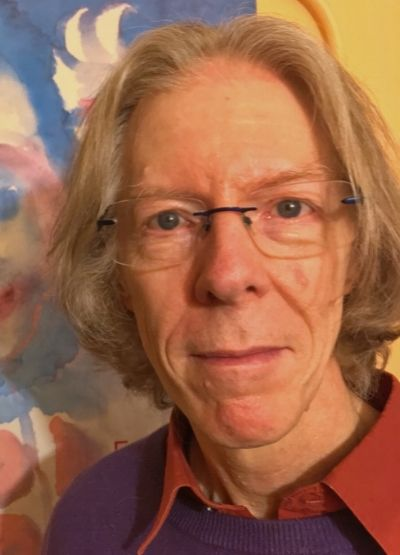

How did you start meditating?
I began when I was still in school. I realised that my very limited, quite traditional Protestant Christian upbringing was empty. I lived in a rural area and, when I went out into the countryside, it was clear to me that I was surrounded by more life than I could see. That started me asking questions. I've been asking questions ever since.
That also led me to start reading books because, by this point, I hadn't met anyone who was actually doing meditation. I only learned through books. Eventually, in my twenties, I started to meet up with people and join groups, and I started to meditate regularly.
Why do you meditate?
I'm always asking questions. I can bring questions into meditation and, if I can allow the question to move in its own direction, answers come. Partly, I found that I need to meditate in order to be able to meditate. As I've become older, my capacity for meditation has changed. When I first began, I could sit down for three quarters of an hour quite easily. Now I struggle beyond five minutes. In a way, one can say that it's going backwards rather than forwards. But in these five minutes, a lot more happens than used to happen in three quarters of an hour.
I meditate now because I'm keeping promises to people. If I'm to keep these promises, I need to be able to discover the answers to the questions that I have been asked, questions that I then ask myself. I need to place myself in a position where I can be of service to others. It's not always for very long, but nevertheless it's still a meditative process. I try to bring myself to the best place to be in, to do what I need to do, to do what I'm asked to do.
Can you please outline examples of the basic anthroposophical meditation or exercises in your understanding?
At the center of the work I do is the Point-Circle meditation that Rudolf Steiner gave in his Curative Education Course. It has become central. Whether it's central to anthroposophical work as a whole, I couldn't say, but it certainly became central to my work as I entered further into anthroposophy. My inner work is an exploration into anthroposophy.
The group of people to whom the Point-Circle Meditation was given was made up of doctors and people already working with special-needs children. Such children didn't fit into mainstream care and education. They were children who called for spiritual insight and understanding of why they should be in this world, how they could fulfil some sort of valuable potential within earthly life.
To these people Rudolf Steiner gave a lot of clues about human constitutions. He gave the Point-Circle Meditation and said to them that, if they were able to do this meditation, they would wake up in the polarity of the human being. They would wake up in the polarity of that which lives in the head and that which lives in the metabolism and limbs.
He began very simply by giving them sentences. He gave them freedom to choose the exact wording. I'm not going to describe the whole process now, but to these sentences he then added images. There was a sentence and an image to be done in the evening and another sentence with an image to be done in the morning. In a way, the morning is the inside-out of the evening, an inversion.
One can find, in this meditation, so many ways of understanding issues that are specific and also have a connection to universal mutuality. There is a point that has no extension in space. There is a circle, which is not material but has a spiritual and conceptual nature. Working with this meditation has changed how I think.
What is the most memorable experience for you in Living Connections, the first public event on Meditation at the Goetheanum: July 7–9 2017?
What I remember most were the artistic presentations. Many of these presentations really took us into a place of listening, with nothing to see. There were concerts where people were playing instruments and I could see them, but there were also events, where I couldn't see the performance. I could only hear something. That's what I remember when I look back to the experiences of what I heard. The memories of what I heard remain very strongly with me, much more so than what I saw. When I shut my eyes, what I heard created a deep impression in me.
I know that you are a part of the Forum of Meditation in Research. Would you like to say something about this project?
Joining that project has been a very important experience for me. It was a research project where I was not particularly sure about how I could contribute. For many years, I've been ploughing my own path, in connection with other people, of course. But in that project, I came together with people I'd not met before.
It was very important for me to experience, not that I was different, but that it was possible to approach something new in different ways that gave insight to other people. I wouldn't say that my insights were better or worse than anyone else's. Judging one's experiences against other people’s experiences is not useful. It was interesting to experience what came to mind, to feelings, to imagination that grew out of listening to other people speak of what came to them when we were all investigating the same question in our own ways. It was an enriching and very important inner experience.
Do you have any advice for someone who would like to begin to meditate?
The advice that I give to people who ask me such questions is that when you begin, you can't do wrong, but it's really important to review what you are doing and how you are within what you are doing. It would be possible to say that you have to start off in a right way with meditations, but who knows what is right for another person? There are so many different possibilities. I would add that it is important to develop awareness of the emerging relationship between the practice and the motivation to practice. Is this what I want to do?
What is most important is what one is prepared to do, what one feels good about doing. Meditation isn't always about feeling good. If one reviews the process, one may still feel that it is good to continue. One could be brave and talk to somebody else who meditates. It is easier to talk about how one feels about becoming a meditator than about the experiences one has in meditation. I feel that one needs to choose one’s own meditative practice and not hand over that responsibility to someone else, no matter how experienced. I would only offer suggestions, invitations to meditate.
Do you have anything else to add?
What has been very important to me is the realisation that entering into a relationship to the soul world and the spiritual world means entering into a relationship with other beings. Some of these beings contribute to one's humanity and some stand as a counter or a contradiction to one's humanity.
One has to work one's way through the social life that grows out of becoming related to, and deeply connected to other beings, sometimes human, sometimes not. My meditative life is an expansion of my social life. When I ask questions, another being gives me the answers. I am still waking up to the part of myself through which these answers come.